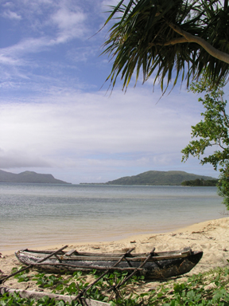
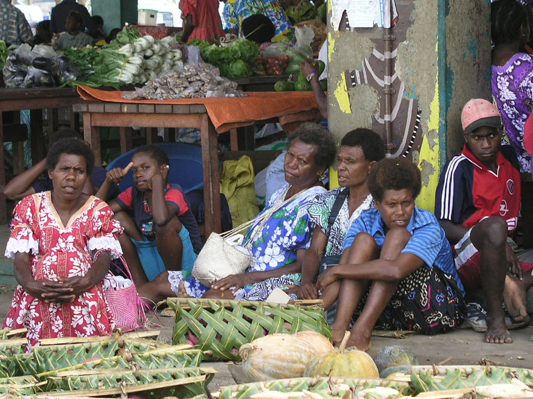
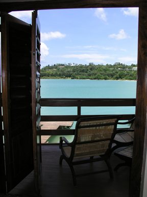
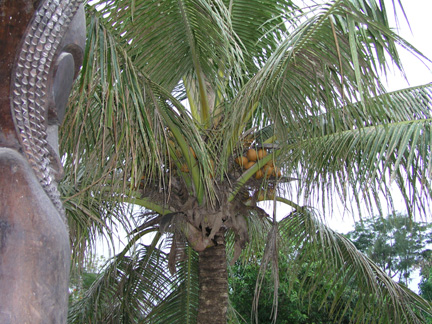
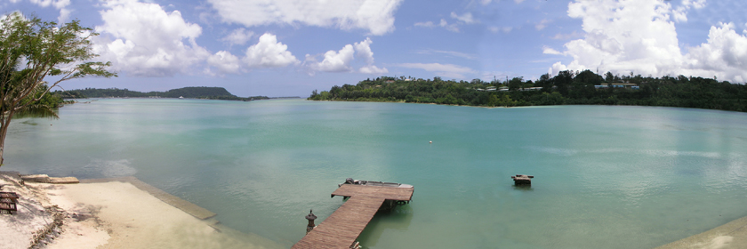
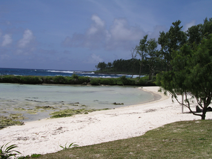
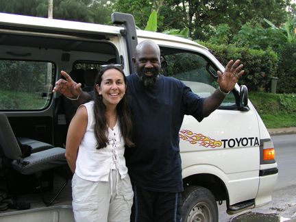

Paradise dreaming
Fatumaru Bay, Efate, Vanuatu
We’re sitting on our balcony at the Fatumaru Lodge watching an afternoon shower make its way across the bay. This herald of an early rainy season seems as good a reason as any to stay in, enjoy the view and write another yearaway entry.
Vanuatu’s motto, “Another time, another pace,” is a fabulous maxim to attach to this chain of 83 islands covering 13,000 sq km. When you arrive from Sydney there is only a one hour time difference, but you very quickly come to realise that life is being conducted at a very different pace altogether.
Vanuatu gained independence in 1980 after 74 years as the Anglo-French condominium of the New Hebrides. This crazy set up, and the only one of its kind ever, meant that the French and the English jointly administered the country. There was two of everything – two police forces, two legal systems, two judiciaries, two school systems and, although this may be hard to believe, two sets of driving rules. So, for the early years of the Condominium the French drove on the left and the Brits on the right. And, if you were neither of the two, as you stepped onto New Hebridian soil you had to decide which system you would prefer to live under! It was said that the French legal system was far harsher, but their prison cooking was trés supérieur! It is hardly surprising that the Anglo-French Condominium quickly became known as the ‘Anglo-French Pandemonium.’
Efate, the island which we stayed on, was one of those places that paradise dreams are made of – white sands, azure blue waters, palm trees and not a MacDonald’s or KFC within thousands of miles!
In addition, the Ni-Vanuatan people are just about the most honest and friendly people we have ever come across. Strangely, this is something that it is hard to get used to. You meet a stranger on the road and they start chatting to you and you get that sinking feeling – perhaps you are being led into a sale or someway to ease the burden of that cash in your pocket! This is, after all, where so many conversations with strangers tend to lead – especially in touristy places. Then you realise that there is no sale, no offer of a taxi, nor a handicraft to buy. In fact, the person you are chatting to is doing simply that – chatting to you! This is something that made Vanuatu a very special place indeed.
We mostly took to chilling out and enjoying the little capital of Port Vila or hanging out reading and relaxing in our wonderful room at the Fatumaru Lodge overlooking the bay (http://www.fatumaru.com). A French couple own the Lodge. They quite recently gave up the hustle and bustle of Lyon and moved here with their kids to enjoy the island life and build this very special hotel. We were chuffed to pieces with our find! The island was littered with so many characterless international-style hotels but the Fatumaru Lodge had that ‘something special’ and a real sense of style.
One day, we decided to hire a minibus and explore the island. Our driver, John Hosea, did everything he could to make our day a memorable one. We had been warned that some drivers bomb it around the island and don’t really understand why a tourist would want to stop anywhere apart from the beaches, but John wasn’t like this at all.
Of course, he took us to a couple of special beaches; including Eton Beach which was as close to paradise as we have ever been. And, we had paradise all to ourselves, apart from a couple of local lads who were climbing the palm trees behind us, looking out to sea and singing!
We also took a look at village life. John stopped outside a very small village called Sama and asked a couple of young girls whether they would mind taking us for a look around. Their first reaction was to giggle, but then they seemed happy, if somewhat perplexed, by our interest! The two girls, Esther and Leipakoa, took us through the village which was a mix of corrugated iron hut-like homes and older more traditional wooden ones. Living here was basic and not for the first time on this trip we were abruptly reminded that Vanuatu is a third world country. They showed us the Chief’s Nakamal where the men meet in the evening to drink kava and chat. They also showed us how they cook their food in an open fire on the floor. All very interesting and very different from anything we know!
As a little aside, I would like to tell you a little more about one of my favourite subjects – drink. Kava, which I mentioned the men of the island drink, is an intoxicant made from a root and is the only legal narcotic in the world. We tried it. You drink it out of a coconut shell, swig it down in one go and it tastes like peppery, muddy water! We only had one shell each and so the soporific effect didn’t really kick in, but it did make our lips and mouths go strangely numb! Traditionally it is drunk only by men and prepared by young virginal men who chew the pulp and spit the juice out ready for drinking. Luckily ours was prepared in a food blender and we requested no extra saliva!
Our final stop on our trip was at a little shack on Havannah Bay full of coca-cola bottles. “Not very interesting,” you might think. But, the proprietor, an oldish man with a very gappy smile explained to us that US GIs who came here to protect the islands during WWII had left them behind and that, all the bottles were different. In fact, there are over 500 different coca-cola bottles in existence – each inscribed with a difference place of production on the bottom and a different year on the side – and he has 346 of them AND, he is still unearthing them today! This stop on our journey was a very Palin-esque moment indeed!!
But, enough said for now. It is time to head out into the afternoon sun and have a spot of lunch. We’re not sure what delights await us as we have already tried the local coconut crab (so called not because it is cooked in coconut but because the crab only eats coconuts) and ‘la rousette’ – or flying fox which comes prepared in a juice made from ‘ze gertz of ze bat’ (according to the French maitre’D!). So, who knows what delights await us at the table today?
Vanuatu’s motto, “Another time, another pace,” is a fabulous maxim to attach to this chain of 83 islands covering 13,000 sq km. When you arrive from Sydney there is only a one hour time difference, but you very quickly come to realise that life is being conducted at a very different pace altogether.
Vanuatu gained independence in 1980 after 74 years as the Anglo-French condominium of the New Hebrides. This crazy set up, and the only one of its kind ever, meant that the French and the English jointly administered the country. There was two of everything – two police forces, two legal systems, two judiciaries, two school systems and, although this may be hard to believe, two sets of driving rules. So, for the early years of the Condominium the French drove on the left and the Brits on the right. And, if you were neither of the two, as you stepped onto New Hebridian soil you had to decide which system you would prefer to live under! It was said that the French legal system was far harsher, but their prison cooking was trés supérieur! It is hardly surprising that the Anglo-French Condominium quickly became known as the ‘Anglo-French Pandemonium.’
Efate, the island which we stayed on, was one of those places that paradise dreams are made of – white sands, azure blue waters, palm trees and not a MacDonald’s or KFC within thousands of miles!
In addition, the Ni-Vanuatan people are just about the most honest and friendly people we have ever come across. Strangely, this is something that it is hard to get used to. You meet a stranger on the road and they start chatting to you and you get that sinking feeling – perhaps you are being led into a sale or someway to ease the burden of that cash in your pocket! This is, after all, where so many conversations with strangers tend to lead – especially in touristy places. Then you realise that there is no sale, no offer of a taxi, nor a handicraft to buy. In fact, the person you are chatting to is doing simply that – chatting to you! This is something that made Vanuatu a very special place indeed.
We mostly took to chilling out and enjoying the little capital of Port Vila or hanging out reading and relaxing in our wonderful room at the Fatumaru Lodge overlooking the bay (http://www.fatumaru.com). A French couple own the Lodge. They quite recently gave up the hustle and bustle of Lyon and moved here with their kids to enjoy the island life and build this very special hotel. We were chuffed to pieces with our find! The island was littered with so many characterless international-style hotels but the Fatumaru Lodge had that ‘something special’ and a real sense of style.
One day, we decided to hire a minibus and explore the island. Our driver, John Hosea, did everything he could to make our day a memorable one. We had been warned that some drivers bomb it around the island and don’t really understand why a tourist would want to stop anywhere apart from the beaches, but John wasn’t like this at all.
Of course, he took us to a couple of special beaches; including Eton Beach which was as close to paradise as we have ever been. And, we had paradise all to ourselves, apart from a couple of local lads who were climbing the palm trees behind us, looking out to sea and singing!
We also took a look at village life. John stopped outside a very small village called Sama and asked a couple of young girls whether they would mind taking us for a look around. Their first reaction was to giggle, but then they seemed happy, if somewhat perplexed, by our interest! The two girls, Esther and Leipakoa, took us through the village which was a mix of corrugated iron hut-like homes and older more traditional wooden ones. Living here was basic and not for the first time on this trip we were abruptly reminded that Vanuatu is a third world country. They showed us the Chief’s Nakamal where the men meet in the evening to drink kava and chat. They also showed us how they cook their food in an open fire on the floor. All very interesting and very different from anything we know!
As a little aside, I would like to tell you a little more about one of my favourite subjects – drink. Kava, which I mentioned the men of the island drink, is an intoxicant made from a root and is the only legal narcotic in the world. We tried it. You drink it out of a coconut shell, swig it down in one go and it tastes like peppery, muddy water! We only had one shell each and so the soporific effect didn’t really kick in, but it did make our lips and mouths go strangely numb! Traditionally it is drunk only by men and prepared by young virginal men who chew the pulp and spit the juice out ready for drinking. Luckily ours was prepared in a food blender and we requested no extra saliva!
Our final stop on our trip was at a little shack on Havannah Bay full of coca-cola bottles. “Not very interesting,” you might think. But, the proprietor, an oldish man with a very gappy smile explained to us that US GIs who came here to protect the islands during WWII had left them behind and that, all the bottles were different. In fact, there are over 500 different coca-cola bottles in existence – each inscribed with a difference place of production on the bottom and a different year on the side – and he has 346 of them AND, he is still unearthing them today! This stop on our journey was a very Palin-esque moment indeed!!
But, enough said for now. It is time to head out into the afternoon sun and have a spot of lunch. We’re not sure what delights await us as we have already tried the local coconut crab (so called not because it is cooked in coconut but because the crab only eats coconuts) and ‘la rousette’ – or flying fox which comes prepared in a juice made from ‘ze gertz of ze bat’ (according to the French maitre’D!). So, who knows what delights await us at the table today?

A traditional canoe

Shoppers at Port Vila Market

Ready bagged potatoes at Port Vila market - 100% recycleable!

View of Fatumaru Bay from our balcony

A tam-tam carving at the Fatumaru Lodge

Panorama of Fatumaru Bay

Eton Beach

The Coca-Cola bottle man

Sue & John Hosea

Banana leaf in Mele Falls